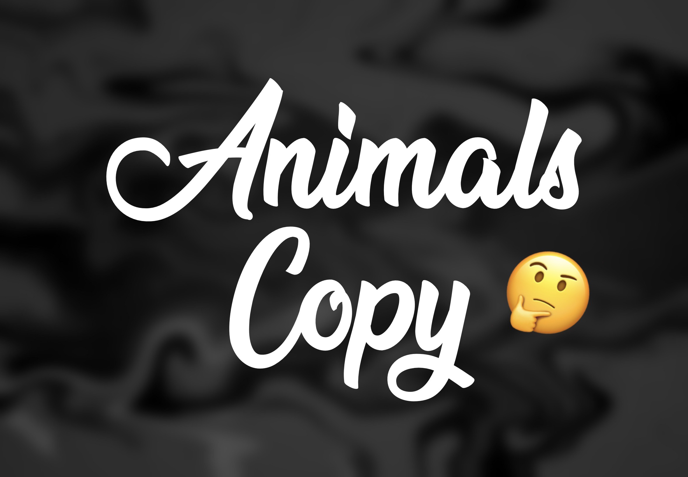
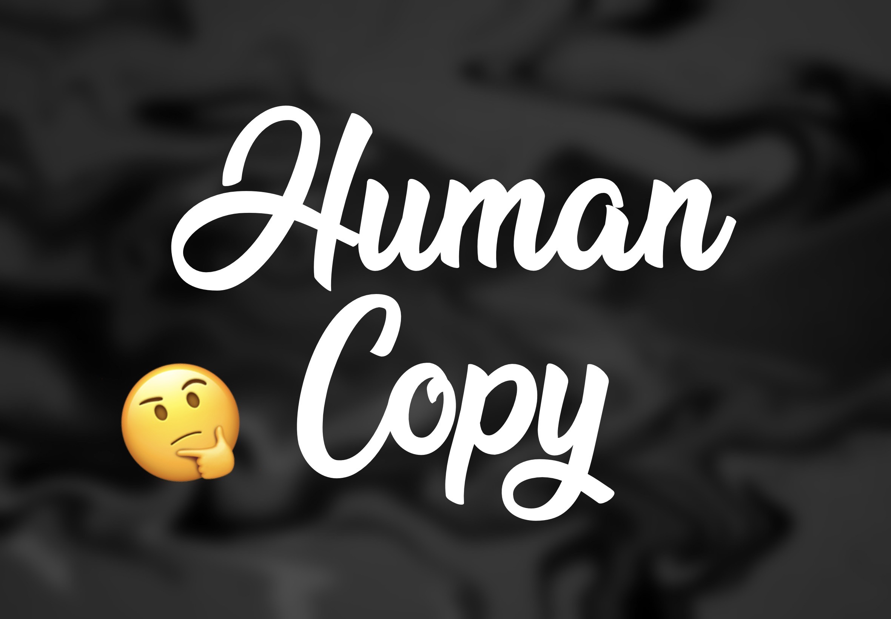

健康風險
Risks
1. 動物複製的健康風險
1.健康問題和壽命縮短：許多克隆動物在出生後面臨健康問題，例如器官異常、免疫功能低下、心血管疾病等。這些問題 可能會導致克隆動物的壽命縮短，生活質量下降。
2.發育異常和先天缺陷：克隆過程中的基因重組和表觀遺傳學變化可能導致動物發育過程中的異常，包括神經管缺陷、生 長遲緩等先天性缺陷。
3.心理和行為問題：部分克隆動物顯示出行為異常，如焦慮、攻擊性增加等，這可能與基因表達和環境因素的交互作用有關。
4.生殖問題：部分克隆動物可能存在生殖系統異常，包括生育能力降低、生殖器官畸形等問題。

2. 人類複製的健康風險
1.嬰兒先天性異常：在人類克隆實驗中，存在著胚胎發育不正常或者胎兒先天性異常的風險，這些問題可能導致嬰兒的 健康問題和生命風險增加。
2.遺傳和表觀遺傳風險：克隆過程中的基因重組和表觀遺傳學變化可能對後代健康產生長期影響，包括遺傳疾病的傳播 風險和表現型特徵的不正常。
3.倫理和心理壓力：與人類複製相關的倫理問題和社會反響可能對家庭和個人造成心理壓力，這對身體和心理健康都可 能產生負面影響。